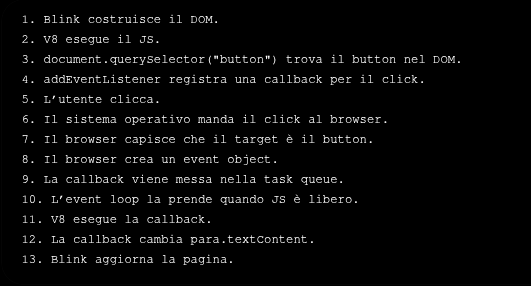
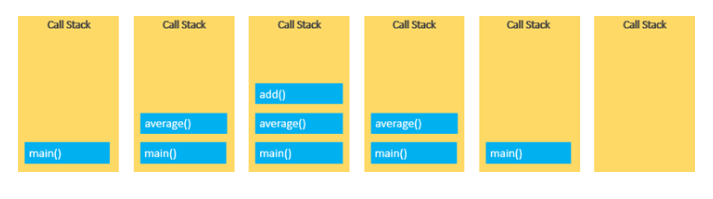
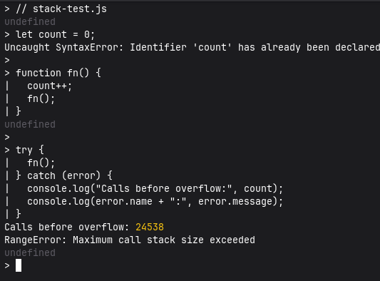
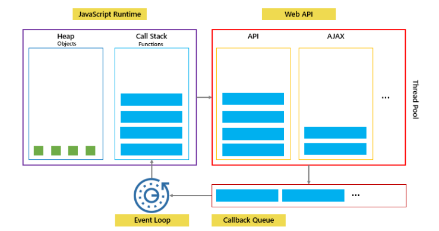
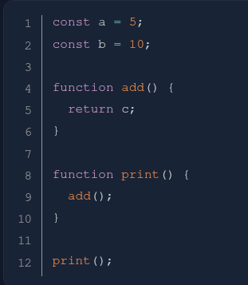
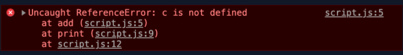
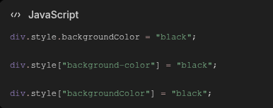
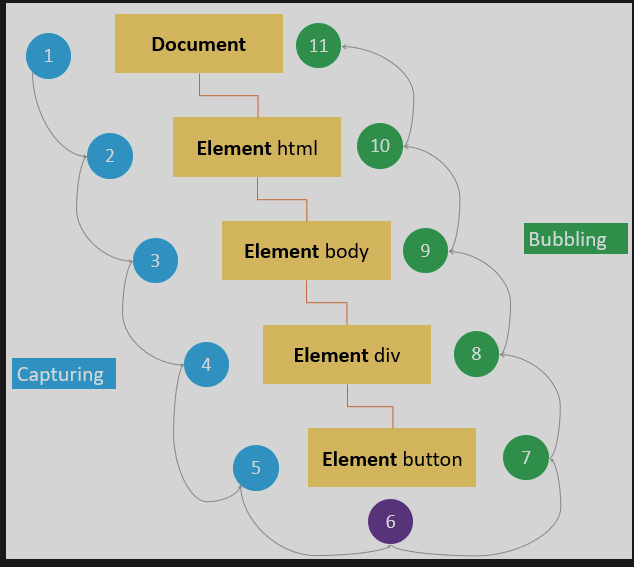
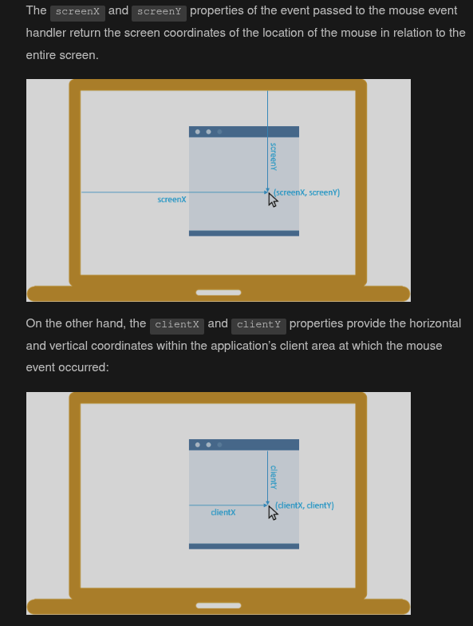

02 — Basic JavaScript
Fondamenti del linguaggio, runtime, DOM, eventi e problem solving
Sommario
JavaScript viene eseguito dai motori integrati nei browser. Runtime come Node.js permettono di usarlo anche fuori dal browser, per esempio nel terminale o su un server.
Includere JavaScript
Internamente:
<body>
<script>
console.log("Hello, World!");
</script>
</body>
Esternamente:
<script src="javascript.js" defer></script>
Con defer, lo script esterno viene scaricato senza bloccare il parsing HTML e
viene eseguito dopo che il documento è stato analizzato.
Variabili
letdichiara un binding riassegnabile con scope di blocco.constdichiara un binding non riassegnabile con scope di blocco; gli oggetti assegnati a una costante possono comunque essere modificati.varha scope di funzione e regole di hoisting diverse. Esiste ancora, ma nel codice moderno si preferiscono normalmenteconstelet.
const PI = 3.14;
let age = 11;
age = 12;
console.log(PI + age);
NVM, Node.js, npm e npx
- Node.js è un runtime JavaScript fuori dal browser e include una REPL (Read-Eval-Print Loop).
- NVM (Node Version Manager) installa e seleziona versioni diverse di Node.js, utile quando i progetti hanno requisiti incompatibili.
- npm gestisce pacchetti, dipendenze e script del progetto.
- npx è un’interfaccia di
npm exec: esegue il binario di un pacchetto locale oppure, con conferma, usa una versione scaricata nella cache npm.
Installazione
sudo pacman -S nvm
# NVM modifica PATH e versione attiva di Node.js; su Arch va inizializzato.
echo 'source /usr/share/nvm/init-nvm.sh' >> ~/.bashrc
source ~/.bashrc
nvm --version
nvm install --lts
node -v
npm -v
npx -v
# Ignora, durante la risoluzione, release pubblicate da meno di 3 giorni.
# Richiede una versione di npm che supporti min-release-age.
npm config set min-release-age=3
min-release-age misura giorni, non anni. Può ridurre l’esposizione a una
release appena compromessa, ma non sostituisce lockfile, audit e revisione delle
dipendenze; può inoltre ritardare una patch di sicurezza urgente.
Usare la REPL
- Apri il terminale ed esegui
node. - Chiudi la REPL con
.exit
Differenza tra npm e npx
npmserve soprattutto a installare e gestire pacchetti.npm install lodashinstallalodashnel progetto.npm install→ installa tutte le dipendenze scritte nelpackage.json.
Dopo un’installazione locale, il pacchetto viene salvato in node_modules/ e
registrato in package.json e package-lock.json.
npxserve a eseguire un pacchetto/comando npm, spesso senza installarlo globalmente.
La x puoi ricordarla come:
Per esempio, npx cowsay "Hello Andrea" può usare una dipendenza locale o
scaricare il pacchetto nella cache, senza richiedere npm install -g cowsay.
Esempio pratico:
- non voglio necessariamente tenere
create-viteinstallato per sempre. Serve solo lanciarlo una volta per generare il progetto.
Quindi:
npx create-vite@latest my-app
cd my-app
npm install
npm run dev
Differenza tra API e libreria
- Un’API è un’interfaccia: definisce operazioni, parametri e risultati attraverso cui due componenti software comunicano.
Sono comandi/metodi che ti vengono messi a disposizione:
document.querySelector();
canvas.getContext();
ctx.fillRect();
fetch();
localStorage.setItem();
- Una libreria è codice già scritto che aggiungi al progetto.
three.js
React
Lodash
Axios
Bootstrap
jQuery
Tu la importi e poi usi le sue funzioni/classi:
import * as THREE from "three";
A quel punto puoi usare l’API di three.js:
const scene = new THREE.Scene();
Tipi di dato comuni
JavaScript ha sette tipi primitivi e il tipo non primitivo object.
Tipi primitivi
-
numberrappresenta numeri IEEE 754 in doppia precisione. L’intervallo±(2^53 - 1)riguarda gli interi rappresentabili esattamente, non tutti i valorinumber; esistono inoltreInfinity,-InfinityeNaN. -
bigintrappresenta interi di grandezza arbitraria, per esempio123n. -
stringrappresenta sequenze di caratteri; non esiste un tipo separato per il singolo carattere.const str = "Hello"; const str2 = 'Anche gli apici singoli sono validi'; const phrase = `Una template literal può includere: ${str}`; -
booleanrappresenta i valori logicitrueefalse. -
nullrappresenta intenzionalmente l’assenza di un valore. -
undefinedè il valore tipico di un binding o di una proprietà non definiti. -
symbolcrea identificatori primitivi univoci.
Tipo non primitivo
objectrappresenta collezioni di proprietà e strutture più complesse; funzioni e array sono oggetti specializzati.
typeof
typeof xrestituisce una stringa con il tipo del valore.typeof(x)è equivalente, ma le parentesi appartengono all’espressione e non a una chiamata di funzione.typeof nullrestituisce storicamente"object", anche senullè un primitivo.
Condizionali
if, else if & else
<label for="weather">Select the weather type today: </label>
<select id="weather">
<option value="">--Make a choice--</option>
<option value="sunny">Sunny</option>
<option value="rainy">Rainy</option>
<option value="snowing">Snowing</option>
<option value="overcast">Overcast</option>
</select>
<p></p>
const select = document.querySelector("select");
const para = document.querySelector("p");
select.addEventListener("change", setWeather);
function setWeather() {
const choice = select.value;
if (choice === "sunny") {
para.textContent =
"It is nice and sunny outside today. Wear shorts! Go to the beach, or the park, and get an ice cream.";
} else if (choice === "rainy") {
para.textContent =
"Rain is falling outside; take a rain coat and an umbrella, and don't stay out for too long.";
} else if (choice === "snowing") {
para.textContent =
"The snow is coming down — it is freezing! Best to stay in with a cup of hot chocolate, or go build a snowman.";
} else if (choice === "overcast") {
para.textContent =
"It isn't raining, but the sky is grey and gloomy; it could turn any minute, so take a rain coat just in case.";
} else {
para.textContent = "";
}
}
Oppure:
const select = document.querySelector("select");
const para = document.querySelector("p");
select.addEventListener("change", setWeather);
function setWeather() {
const choice = select.value;
switch (choice) {
case "sunny":
para.textContent =
"It is nice and sunny outside today. Wear shorts! Go to the beach, or the park, and get an ice cream.";
break;
case "rainy":
para.textContent =
"Rain is falling outside; take a rain coat and an umbrella, and don't stay out for too long.";
break;
case "snowing":
para.textContent =
"The snow is coming down — it is freezing! Best to stay in with a cup of hot chocolate, or go build a snowman.";
break;
case "overcast":
para.textContent =
"It isn't raining, but the sky is grey and gloomy; it could turn any minute, so take a rain coat just in case.";
break;
default:
para.textContent = "";
}
}
Istruzione switch
switch (expression) {
case choice1:
// run this code
break;
case choice2:
// run this code instead
break;
// include as many cases as you like
default:
// actually, just run this code
break;
}
Operatore ternario
condition ? valueIfTrue : valueIfFalse;
<label for="theme">Select theme: </label>
<select id="theme">
<option value="white">White</option>
<option value="black">Black</option>
</select>
<h1>This is my website</h1>
const select = document.querySelector("select");
const html = document.querySelector("html");
document.body.style.padding = "10px";
function update(bgColor, textColor) {
html.style.backgroundColor = bgColor;
html.style.color = textColor;
}
select.addEventListener("change", () =>
select.value === "black"
? update("black", "white")
: update("white", "black"),
);
Altri esempi sui condizionali.
Debugger e DevTools
Step into
→ entra nella funzione chiamata
Step over
→ esegue la riga senza entrare nelle funzioni
Step out
→ esce dalla funzione corrente
Continue
→ continua fino al prossimo breakpoint o alla fine
Approfondimenti:
- Ispezionare il CSS
- Riferimento del pannello Elements
- Modificare il DOM
- Breakpoint JavaScript
- Debugging in Chrome
Funzioni
Dichiarazione di funzione
console.log(square(3));
// Con hoisting la posso definire anche dopo la chiamata
function square(num) {
return num * num;
}
Function expression
Una funzione è un valore e può essere assegnata a una variabile o passata come callback. Il nome interno è utile negli stack trace.
const square = function square(num) {
return num * num;
};
console.log(square(3));
Arrow function
const squareLong = (num) => {
return num * num;
};
const squareShort = (num) => num * num;
console.log(squareShort(4)); // 16
Event listener
input.addEventListener("change", () => {
console.log(input.value);
});
input.addEventListener("change", (event) => {
console.log(event.target.value);
});
Eventi sotto il cofano
utente clicca un bottone → click event
utente scrive in un input → input event
utente cambia valore input → change event
utente muove il mouse → mousemove event
pagina finisce di caricarsi → load event
utente preme un tasto → keydown event
form viene inviato → submit event
- Quando succede un evento, il browser crea anche un event object, cioè un oggetto con informazioni su quello che è successo.
Dentro event trovo queste info:
event.type → tipo evento, es. "click"
event.target → elemento che ha generato l’evento
event.timeStamp → quando è successo
- Il browser è sempre in ascolto: click, tastiera, mouse, form, caricamento pagina. Con
addEventListenerscegli quali eventi ti interessano e che codice eseguire quando arrivano.
button.addEventListener("click", (event) => {
console.log(event.type); // "click"
console.log(event.target); // il button cliccato
});
Flusso nel browser: Blink, V8 e sistema operativo

Callback
- In pratica eseguo una funzione dentro un’altra funzione quando ne ho bisogno (occhio alla sintassi)
addEventListener("event-type", callback)esetInterval(callback, 1000)sono due esempi comuni
function sayHello() {
console.log("Hello!");
}
function runSomething(callback) {
callback();
}
runSomething(sayHello);
sayHello→ rappresenta la funzione stessasayHello()→ è un comando che esegue quella funzione
Call stack
Approfondimento sulla call stack.
- Un programma gestisce le chiamate di funzione con una pila LIFO.
function add(a, b) {
return a + b;
}
function average(a, b) {
return add(a, b) / 2;
}
const x = average(10, 20);
Segue questa call stack:

Stack overflow
La struttura dati stack ha memoria limitata: troppe chiamate causano stack overflow
// funzione ricorsiva
function fn() {
fn();
}
fn(); // dà stack overflow

Memoria heap
- In un modello semplificato, la stack conserva i frame delle chiamate e la heap ospita oggetti e altri dati gestiti dinamicamente. I dettagli concreti dipendono dal motore JavaScript.
- Il garbage collector può recuperare un oggetto quando non è più raggiungibile; non esiste una garanzia sul momento esatto in cui la memoria verrà liberata.
function createUser() {
const user = {
name: "Andrea",
age: 31
};
return user;
}
const me = createUser(); // me conserva un riferimento all'oggetto
1. Entri in createUser()
2. Viene creato un object: { name: "Andrea", age: 31 }
3. L’object viene messo nella heap
4. La variabile user contiene un riferimento a quell’object
5. return user restituisce quel riferimento
6. createUser() finisce
7. L’object resta vivo perché const me lo sta ancora riferendo
AJAX e Fetch API
AJAX significa Asynchronous JavaScript and XML, ma oggi i dati vengono spesso scambiati come JSON. Il termine descrive richieste asincrone e aggiornamenti parziali dell’interfaccia senza ricaricare l’intera pagina.
Senza AJAX:
clicchi “Mostra meteo”
→ il browser ricarica tutta la pagina
Con AJAX:
clicchi “Mostra meteo”
→ JS chiede i dati al server
→ arriva risposta (quasi sempre in formato JSON)
→ aggiorni solo un div
Promise con .then()
<button id="load-user">Load user</button>
<p id="result"></p>
const button = document.querySelector("#load-user");
const result = document.querySelector("#result");
button.addEventListener("click", () => {
fetch("https://example.com/user")
.then((response) => {
if (!response.ok) {
throw new Error(`HTTP ${response.status}`);
}
return response.json();
})
.then((data) => {
result.textContent = data.name;
})
.catch((error) => {
result.textContent = `Errore: ${error.message}`;
});
});
La stessa richiesta con async/await
const button = document.querySelector("#load-user");
const result = document.querySelector("#result");
button.addEventListener("click", async () => {
try {
const response = await fetch("https://example.com/user");
if (!response.ok) {
throw new Error(`HTTP ${response.status}`);
}
const data = await response.json();
result.textContent = data.name;
} catch (error) {
result.textContent = `Errore: ${error.message}`;
}
});
fetch() non rigetta la promise per risposte HTTP come 404 o 500: per
questo gli esempi controllano esplicitamente response.ok.
Event loop e JavaScript asincrono
Approfondimento sull’event loop.

- Il codice sincrono viene eseguito sulla call stack.
- Il browser gestisce timer, rete e altri lavori tramite Web API esterne alla stack JavaScript.
- Quando la stack è vuota, l’event loop esegue prima le microtask in attesa (per esempio le reazioni delle promise) e poi una task dalla task queue (per esempio timer o eventi UI). Promise e timer non condividono quindi una sola “callback queue”.
Problem solving
La sintassi è uno strumento; prima di scrivere codice bisogna capire il problema.
- Definisci input, output, vincoli e casi limite.
- Dividi il problema in parti verificabili.
- Scrivi pseudocodice senza dipendere dalla sintassi del linguaggio.
- Implementa e prova esempi normali, limiti ed errori.
Esempio: FizzBuzz
Il programma riceve un intero positivo e stampa i valori da 1 al limite. Per i
multipli di 3 stampa Fizz, per quelli di 5 stampa Buzz e per i multipli
di entrambi stampa FizzBuzz.
Pseudocodice:
leggi il limite
se il limite non è un intero positivo, mostra un errore
per ogni numero da 1 al limite:
se è divisibile per 15, stampa FizzBuzz
altrimenti se è divisibile per 3, stampa Fizz
altrimenti se è divisibile per 5, stampa Buzz
altrimenti stampa il numero
const readline = require("node:readline/promises").createInterface({
input: process.stdin,
output: process.stdout,
});
function fizzBuzz(limit) {
for (let number = 1; number <= limit; number += 1) {
if (number % 15 === 0) {
console.log("FizzBuzz");
} else if (number % 3 === 0) {
console.log("Fizz");
} else if (number % 5 === 0) {
console.log("Buzz");
} else {
console.log(number);
}
}
}
async function main() {
const answer = await readline.question("Inserisci un intero positivo: ");
const limit = Number(answer);
if (!Number.isSafeInteger(limit) || limit < 1) {
console.error("Valore non valido.");
readline.close();
return;
}
fizzBuzz(limit);
readline.close();
}
main();
Errori
Guida MDN agli errori JavaScript.
SyntaxError: il parser incontra sintassi non valida.ReferenceError: il codice usa un identificatore non disponibile nello scope, per esempiocnsoleal posto diconsole.TypeError: un valore non supporta l’operazione richiesta, per esempio chiamare qualcosa che non è una funzione.
Stack trace


Segue i passi dell’errore:
Lo stack trace mostra il punto dell’errore e la catena delle chiamate: nell’esempio
la riga 12 chiama print, che chiama add, dove nasce il problema.
Avvisi
Un warning segnala un problema potenziale, ma normalmente non interrompe l’esecuzione.
Clean code
Nomi e variabili
greetingmeglio dix.- Variabili = Sostantivi (
userCount); - Funzioni = Verbi (
getUser()).
- Variabili = Sostantivi (
- Usa lo stesso verbo per azioni simili:
getUserData,getUserInput. - Numeri fissi in costanti: (es.
const SECONDS_IN_HOUR). - In JS Usa
camelCase(tranne costanti inALL_CAPS).
Stile e formattazione
- Scegli spazi o tab e applica la scelta in modo coerente, preferibilmente con formatter e linter.
- Il punto e virgola non è sempre obbligatorio grazie all’Automatic Semicolon Insertion, ma uno stile coerente evita casi ambigui.
- Una lunghezza massima vicina a 80–100 caratteri è una linea guida, non una regola del linguaggio.
const total =
firstValue +
secondValue +
thirdValue;
Commenti
- Spiega il PERCHÉ, non il COME.
- No pseudocodice: Se il codice è chiaro, il commento è inutile.
- Non commentare codice vecchio o “commentato per sicurezza”. Usa Git.
Principio guida
- Leggibilità > Perfezione: Il codice si legge più di quanto si scrive.
Il codice dovrebbe rimanere comprensibile anche senza commenti; i commenti servono soprattutto a spiegare decisioni, vincoli e motivazioni non evidenti.
Cicli
Ciclo for
for (let i = 0; i < 100; i++) {
console.log("Hello world");
}
for … of …per iterare array
const cats = ["Leopard", "Serval", "Jaguar", "Tiger", "Caracal", "Lion"];
for (const cat of cats) {
console.log(cat);
}
breakinterrompe completamente il loop
for (let i = 0; i < 10; i++) {
if (i === 5) {
break;
}
console.log(i);
} // Output: 0 1 2 3 4
continuesalta un’iterazione
for (let i = 0; i < 10; i++) {
if (i === 5) {
continue;
}
console.log(i);
} // Output: 0 1 2 3 4 6 7 8 9
While
let value = initializer;
while (condition) {
// codice da ripetere
value = nextValue;
}
do while
Il blocco viene eseguito almeno una volta, poi viene controllata la condizione.
let value = initializer;
do {
// codice eseguito almeno una volta
value = nextValue;
} while (condition);
Array
Introduzione visuale agli array.
Metodi degli array: map, filter e reduce
map()trasforma ogni elemento e crea un nuovo arrayfilter()tiene solo alcuni elementi e crea un nuovo arrayreduce()riduce tutto l’array a un singolo valore finale
Vengono spesso usati con funzioni di callback, in particolare arrow function.
map() e filter() restituiscono nuovi array; reduce() restituisce il valore
accumulato. Questi metodi non modificano direttamente l’array di origine, anche
se una callback può comunque mutare oggetti condivisi.
Attenzione: altri metodi come push, pop, sort, splice modificano l’array originale.
// ------------MAP---------------------------------------
const cats = ["Leopard", "Serval", "Jaguar", "Tiger", "Caracal", "Lion"];
const upperCats = cats.map((cat) => cat.toUpperCase());
console.log(upperCats);
// OUT: [ "LEOPARD", "SERVAL", "JAGUAR", "TIGER", "CARACAL", "LION" ]
// ------------FILTER------------------------------------
const filtered = cats.filter((cat) => cat.startsWith("L"));
console.log(filtered);
// OUT: [ "Leopard", "Lion" ]
// ------------REDUCE------------------------------------
const numbers = [1, 2, 3, 4];
const sumWithInitial = numbers.reduce((accumulator, current) => {
return accumulator + current;
}, 0); // 0 initial value for accumulator
console.log(sumWithInitial); // 10
// Senza valore iniziale, reduce usa il primo elemento come accumulatore.
const sumWithoutInitial = numbers.reduce((acc, number) => acc + number);
- Esempio Minimale
const numbers = [1, 2, 3, 4, 5];
const doubled = numbers.map((number) => number * 2);
const evens = numbers.filter((number) => number % 2 === 0);
const sum = numbers.reduce((acc, n) => acc + n, 0);
const numbers = [1, 2, 3, 4, 5];
function sumOfTripledEvens(values) {
return values
.filter((number) => number % 2 === 0)
.map((number) => number * 3)
.reduce((accumulator, number) => accumulator + number, 0);
}
console.log(sumOfTripledEvens(numbers));
DOM
Il Document Object Model è la rappresentazione ad albero del documento che il browser espone a JavaScript. Include nodi element, text e altri tipi di nodo e può cambiare dopo il parsing dell’HTML.
Selezionare elementi
<div id="container">
<div class="display"></div>
<div class="controls"></div>
</div>
const container = document.querySelector("#container");
const display = container.firstElementChild;
console.log(display); // <div class="display"></div>
const controls = document.querySelector(".controls");
const previous = controls.previousElementSibling;
console.log(previous); // <div class="display"></div>
element.querySelector(selector)restituisce il primo elemento corrispondente onull.element.querySelectorAll(selector)restituisce unaNodeListstatica con tutte le corrispondenze.
Una NodeList non è un array, anche se supporta length, indicizzazione e
forEach(). Per usare i metodi degli array si può convertirla con
Array.from(nodes) o [...nodes]; vedi lo spread operator.
Creare, inserire e rimuovere nodi
L’elemento è in memoria, ma non entra nel DOM
const div = document.createElement("div");
- Inserimento:
parent.append(child),parent.appendChild(child)oppureparent.insertBefore(newNode, referenceNode). - Rimozione:
element.remove()oppureparent.removeChild(child).
Modificare un elemento
const div = document.createElement("div");
div.style.color = "blue";
// setAttribute sostituisce l'intero attributo style esistente.
div.setAttribute("style", "color: blue; background: white;");
div.setAttribute("id", "theDiv");
div.setAttribute("class", "div-class");
div.getAttribute("id");
div.removeAttribute("id");
div.classList.add("new");
div.classList.remove("new");
div.classList.toggle("active");
// Interpreta il valore come testo.
div.textContent = "Hello World!";
// Interpreta il valore come HTML: mai inserire input non fidato.
div.innerHTML = "<span>Hello World!</span>";
Esempi
- Esempio di sintassi valida per cambiare lo stile inline degli elementi

- Esempio di funzionamento
setAttributeeappendChildper messaggio di errore password
const message = document.createElement("p");
message.textContent = "Password non valida";
message.setAttribute("id", "login-error");
message.setAttribute("class", "error-message");
message.setAttribute("role", "alert");
document.body.appendChild(message);
- Creazione di un
divcon contenuto testuale:
<body>
<h1>THE TITLE OF YOUR WEBPAGE</h1>
<div id="container"></div>
</body>
const container = document.querySelector("#container");
const content = document.createElement("div");
content.classList.add("content");
content.textContent = "This is the glorious text-content!";
container.appendChild(content);
Il DOM risultante equivale a:
<body>
<h1>THE TITLE OF YOUR WEBPAGE</h1>
<div id="container">
<div class="content">This is the glorious text-content!</div>
</div>
</body>
JavaScript modifica il DOM in memoria, non il file HTML sul server. Uno script
esterno con defer può stare in <head> e viene eseguito dopo il parsing, senza
doverlo collocare alla fine di <body>.
Eventi
Un listener associa una callback a un tipo di evento. Riferimento: eventi DOM.
Metodo consigliato:
const btn = document.getElementById("btn");
btn.addEventListener("click", (e) => {
console.log("Tipo:", e.type);
console.log("Elemento cliccato:", e.target);
console.log("Coordinate:", e.clientX, e.clientY);
e.target.style.background = "blue";
});
Metodi sconsigliati:
<button onclick="alert('Hello World')">Click Me</button>
const btn = document.querySelector("#btn");
btn.onclick = () => alert("Hello World");
Entrambe le forme agiscono sull’elemento scelto, non su tutti i bottoni. Sono
però meno flessibili: l’attributo inline mescola HTML e JavaScript, mentre la
proprietà onclick può conservare un solo handler. addEventListener() permette
più listener e opzioni come once, capture e signal.
Collegare listener a una NodeList
<div id="container">
<button id="one">Click Me</button>
<button id="two">Click Me</button>
<button id="three">Click Me</button>
</div>
const buttons = document.querySelectorAll("button");
buttons.forEach((button) => {
button.addEventListener("click", () => {
alert(button.id);
});
});
Approfondimenti

Propagazione di un evento nel DOM: l’evento attraversa prima la fase di capturing, scendendo da Document fino all’elemento target; raggiunge poi il bottone cliccato e risale attraverso gli elementi antenati durante la fase di bubbling. Per impostazione predefinita, i listener registrati con addEventListener() vengono eseguiti durante il bubbling.

Event delegation
<ul id="menu">
<li><a href="/" data-section="home">Home</a></li>
<li><a href="/dashboard/" data-section="dashboard">Dashboard</a></li>
<li><a href="/report/" data-section="report">Report</a></li>
</ul>
const menu = document.querySelector("#menu");
menu.addEventListener("click", (event) => {
const link = event.target.closest("a[data-section]");
if (!link || !menu.contains(link)) {
return;
}
console.log(`Clicked: ${link.dataset.section}`);
});
La delegazione sfrutta il bubbling per gestire molti elementi presenti o futuri con un solo listener sul loro antenato comune.
dispatchEvent()
Approfondimento su dispatchEvent().
Normalmente browser genera eventi con
utente clicca
→ browser crea evento "click"
→ esegue i listener
Con dispatchEvent() posso fare cose custom via codice
JavaScript crea evento
→ lo invia all'elemento
→ vengono eseguiti i listener registrati
Esempio di codice:
const cart = document.querySelector("#cart");
cart.addEventListener("productAdded", (event) => {
console.log(`Aggiunto: ${event.detail.name}`);
console.log(`Prezzo: ${event.detail.price}`);
});
// Creo evento
const productAddedEvent = new CustomEvent("productAdded", {
//oggetto come secondo argomento
detail: {
name: "Tastiera",
price: 49.99,
},
bubbles: true, // Risale ai node genitori se true
cancelable: true, // Consente event.preventDefault().
});
// Lo evoco con dispatchEvent()
cart.dispatchEvent(productAddedEvent);
Callback
Approfondimento sulle callback.
Oggetti
Un oggetto è una collezione di proprietà chiave-valore. L’ereditarietà di JavaScript si basa su catene di prototipi.
const person = {
name: ["Bob", "Smith"],
age: 32,
bio() {
console.log(`${this.name[0]} ${this.name[1]} is ${this.age} years old.`);
},
introduceSelf() {
console.log(`Hi! I'm ${this.name[0]}.`);
},
};
// ---------------------------------------------
// Constructor function: per molte istanze è meglio mettere i metodi
// su Person.prototype o usare una class.
function Person(name) {
this.name = name;
this.introduceSelf = function () {
console.log(`Hi! I'm ${this.name}.`);
};
}
const salva = new Person("Salva");
salva.introduceSelf();
// "Hi! I'm Salva."
const frankie = new Person("Frankie");
frankie.introduceSelf();
// "Hi! I'm Frankie."
Primitive e riferimenti a oggetti
let data = 42;
let dataCopy = data;
dataCopy = 43;
console.log(data); // 42
console.log(dataCopy); // 43
const obj = { data: 42 };
const objCopy = obj;
// Entrambe le variabili contengono un riferimento allo stesso oggetto.
objCopy.data = 43;
console.log(obj); // { data: 43 }
console.log(objCopy); // { data: 43 }
function increaseCounterObject(objectCounter) {
objectCounter.counter += 1;
}
function increaseCounterPrimitive(primitiveCounter) {
primitiveCounter += 1;
}
const object = { counter: 0 };
let primitive = 0;
increaseCounterObject(object);
increaseCounterPrimitive(primitive);
console.log(object.counter); // 1
console.log(primitive); // 0
JavaScript passa sempre gli argomenti per valore. Per un primitivo il valore è il dato stesso; per un oggetto il valore copiato è un riferimento. Mutare l’oggetto attraverso quel riferimento è quindi visibile al chiamante, mentre riassegnare un parametro non cambia la variabile esterna.